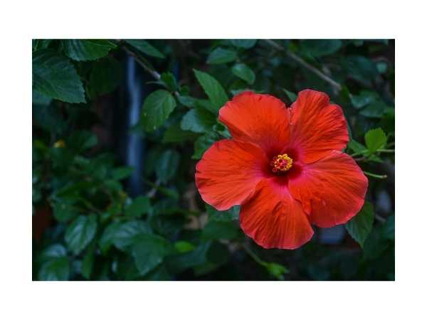

Hibiscus rosa-sinensis
Common Names: Red Hibiscus, Shoe Flower, China Rose, Tropical Hibiscus
Local Name: Sembaruthi (Tamil), Gurhal (Hindi), Japa (Sanskrit)
Family: Malvaceae
Origin: Tropical Asia (likely China or India); widely cultivated pantropically
Plant Type: Perennial evergreen shrub
Variety: Red single-flowered; one of hundreds of cultivars; national flower of Malaysia
Average Lifespan: 10–20+ years
| Growth Habit | Upright to spreading evergreen shrub; multi-stemmed |
| Plant Size | 1.5–4 meters tall; 1–2 meters wide |
| Leaves | Alternate, ovate to broadly ovate; 5–12 cm long; glossy dark green; serrated margins |
| Flowers | Large, showy, 8–15 cm across; bright red; 5 petals; prominent staminal column; each flower lasts one day |
| Flower Characteristics | Blooms daily year-round in tropics; staminal column bears numerous stamens; edible flowers |
| Root System | Fibrous, moderately deep root system; drought-tolerant once established |
| Climate | Tropical and subtropical; thrives in warm, humid conditions |
| Temperature Range | 18–35°C; frost-sensitive; growth slows below 15°C |
| Rainfall Requirement | 800–1500 mm; moderate moisture; tolerates brief drought |
| Soil Type | Well-drained fertile loam; slightly acidic preferred |
| Soil pH Preference | 6.0–7.0 |
| Sun Requirement | Full sun (6+ hours); blooms best in full sun |
| Spacing | 1–2 meters apart for hedge; 2–3 meters for specimen |
| Irrigation Method | Regular watering; drip or basin; avoid waterlogging |
| Water Requirement | Moderate; water regularly during dry spells |
| Can it Grow in Pots? | Yes, excellent in large pots (20–40 liters); popular patio plant |
| Fertilizer Schedule | Every 2–4 weeks during growing season; high-potassium fertilizer promotes flowering |
| Recommended Organic Fertilizers | Compost, vermicompost, banana peel compost, neem cake, wood ash |
| Pesticide Frequency | Monthly preventive; treat immediately if pests appear |
| Recommended Organic Pesticides | Neem oil for aphids, whitefly, and mealybugs; insecticidal soap for spider mites |
| Mulching Practice | Organic mulch around base; keep away from stem |
| Training System | Prune as hedge, standard, or specimen shrub; no support needed |
| Pruning Time | After each flowering flush; major prune in early spring |
| How to Prune | Cut back by one-third to one-half; remove dead wood; promotes new flowering shoots |
| Common Pests | Aphids, whitefly, mealybugs, spider mites, hibiscus beetle |
| Common Diseases | Leaf spot, powdery mildew, root rot, dieback |
| Disease Prevention & Remedies | Good air circulation; avoid overhead watering; neem oil spray; remove infected leaves |
| Flowering Months | Year-round in tropics; peak March–November |
| Pollination Type | Insect-pollinated (bees, butterflies, hummingbirds) |
| Pollination Notes | Each flower lasts one day; prolific bloomer; excellent for daily flower harvest |
| Pollination Details | Insect and bird pollinated; cross-pollination common |
| Propagation by Seeds | Seeds germinate in 2–3 weeks; may not come true to parent |
| Propagation by Cuttings | Semi-hardwood cuttings root easily in 3–4 weeks; preferred method; use rooting hormone |
| Propagation by Grafting | Grafting used for rare cultivars; cleft or approach grafting |
| Water Usage | Moderate; drought-tolerant once established |
| Soil Conservation Practices | Dense hedge planting reduces soil erosion; good windbreak |
| Organic Practices Used | Compost-based feeding; neem oil pest management |
| Companion Plants | Grows well with other tropical shrubs; good companion for butterfly gardens |
| Biodiversity Benefits | Attracts butterflies, bees, and sunbirds; important nectar source |
| Symbolism | Sacred to Goddess Kali and Durga; used in Hindu worship; national flower of Malaysia and South Korea |
| Traditional Uses | Flowers used in hair care (hibiscus oil); petals for herbal tea; used in Ayurveda for hair growth and menstrual health |
| Heart Health | Hibiscus tea shown to lower blood pressure in clinical studies |
| Anti-inflammatory Properties | Flower extracts show anti-inflammatory and antioxidant activity |
| Digestive Health | Used in traditional medicine for digestive complaints and as mild laxative |
Disclaimer: Information provided is for educational purposes only and not a substitute for medical advice.
Add your field observations here.